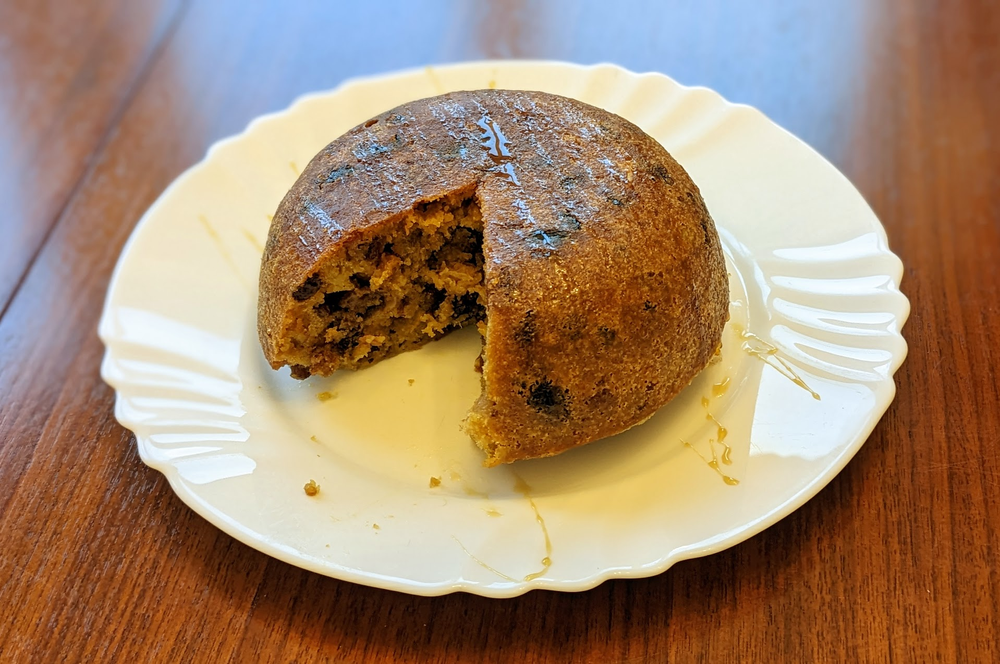

Gâteau "vapeur" aux raisins

Pour 8 parts :
- 225g de raisins (par exemple, un mélange de bruns et blonds)
- 60cL de rhum, ou de cointreau, ou de brandy
- 50g de farine
- 50g de chapelure
- 120g de beurre
- Une demi-cuillère à café de levure chimique
- Une demi-cuillère à café de cannelle en poudre
- Une demi-cuillère à café de muscade en poudre
- Une demi-cuillère à café de gingembre en poudre
- Une belle pincée de sel
- Une pincée de bicarbonade de soude
- Une belle orange bio (on utilise que le zeste)
- Une pincée de poudre de macis (si on en a pas, mettre un peu plus de muscade)
- 25g de écorces confites (si on en a pas, mettre un peu plus de raisins)
- Trois œufs
- (Facultatif) Un peu de mélasse claire ("golden syrup") ou de caramel liquide
- Mettre les raisins dans un bol avec le rhum pour qu'ils gonflent un peu. Laver et zester l'orange, couper les écorces confites en petits bouts fins.
- Dans un gros saladier, mélanger les ingrédients secs : farine, chapelure, levure chimique, bicarbonate de soude, sel, et épices. Couper le beurre en morceaux et l'incorporer au mélange, au robot ou bien avec les doigts.
- Battre les œufs, et les rajouter avec les raisins, le rhum, le zeste d'oranges et les écorces confites.
- Beurrer le moule d'un cuiseur à riz généreusement, et verser le mélange dedans. Lancer un cycle de cuisson comme si c'était du riz brun.
- Quand le cycle de cuisson est fini, vérifier en plantant un cure-dent que c'est assez cuit, puis passer une spatule sur les côtés pour éviter que ça ne colle, et retourner le gâteau sur une assiette pour démouler. Arroser légèrement de mélasse claire ou de caramel, déguster tiède ou refroidi.